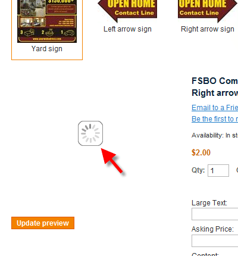
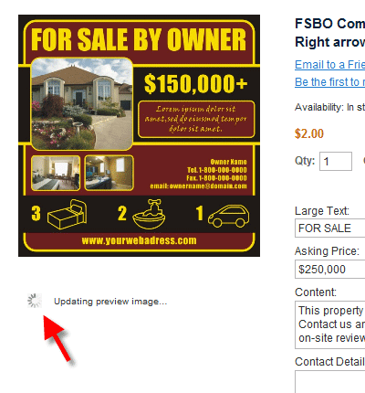
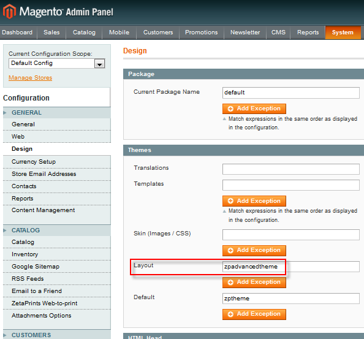

<?xml version="1.0" encoding="UTF-8"?><rss version="2.0"
	xmlns:content="http://purl.org/rss/1.0/modules/content/"
	xmlns:wfw="http://wellformedweb.org/CommentAPI/"
	xmlns:dc="http://purl.org/dc/elements/1.1/"
	xmlns:atom="http://www.w3.org/2005/Atom"
	xmlns:sy="http://purl.org/rss/1.0/modules/syndication/"
	xmlns:slash="http://purl.org/rss/1.0/modules/slash/"
	>

<channel>
	<title>Theme &#8211; Magento web-to-print &amp; dynamic imaging</title>
	<atom:link href="http://www.zetaprints.com/magentohelp/tag/theme/feed/" rel="self" type="application/rss+xml" />
	<link>http://www.zetaprints.com/magentohelp</link>
	<description>Just another WordPress site</description>
	<lastBuildDate>Fri, 07 Jun 2013 06:55:21 +0000</lastBuildDate>
	<language>en-US</language>
	<sy:updatePeriod>hourly</sy:updatePeriod>
	<sy:updateFrequency>1</sy:updateFrequency>
	<generator>https://wordpress.org/?v=4.4.1</generator>
	<item>
		<title>Custom loader icon</title>
		<link>http://www.zetaprints.com/magentohelp/custom-loader-icon-in-magento/</link>
		<pubDate>Wed, 13 Oct 2010 09:47:04 +0000</pubDate>
		<dc:creator><![CDATA[admin]]></dc:creator>
				<category><![CDATA[Web-to-print for developers]]></category>
		<category><![CDATA[Loader]]></category>
		<category><![CDATA[Spinner]]></category>
		<category><![CDATA[Theme]]></category>

		<guid isPermaLink="false">http://www.zetaprints.com/help/?p=10664</guid>
		<description><![CDATA[Many actions in your Magento store require some processing time and animated spinning loaders are used to indicate the request is being processed. You can replace Magento native loaders with your own. Loader icons that come with our Magento web-to-print extension or Magento itself can easily changed. Types of loading spinners There are two types [&#8230;]]]></description>
				<content:encoded><![CDATA[<p>Many actions in your Magento store require some processing time and animated spinning loaders are used to indicate the request is being processed. You can replace Magento native loaders with your own.<span id="more-10664"></span></p>
<p>Loader icons that come with our <a title="Magento web-to-print extension" href="../../../magento/" target="_self">Magento web-to-print extension</a> or Magento itself can easily changed.</p>
<h2>Types of loading spinners</h2>
<p>There are two types of spinners &#8211; big and normal.</p>
<div style="display: table;">
<p></p>
<div style="position: relative; top: 35px; display: inline;">Big spinner is used for preview image loading progress. This is the loader that comes up in place of the preview image until it is loaded.</div>
</div>
<div style="display: table;">
<p></p>
<div style="position: relative; top: 35px; display: inline;">Normal spinner is used for different AJAX requests. This is the loader that comes up in place of the &#8220;Update preview&#8221; button after a customer clicks it.</div>
</div>
<h2>Replacing loading spinners</h2>
<p>Both spinners are stored at (<strong><em>&#8230;skin/frontend/default/zptheme/images</em></strong>) folder of your Magento installation.</p>
<div style="display: table;">
<p></p>
<div style="position: relative; top: 35px; display: inline;">To replace the big spinner, you need to replace <a title="Download native animated .GIF image file" href="http://magento-w2p.googlecode.com/svn/trunk/skin/frontend/default/zptheme/images/big-spinner.gif" target="_self">big-spinner.gif</a> file located in (<em>&#8230;/skin/frontend/default/zptheme/images</em>) folder of your Magento installation.</div>
</div>
<div style="display: table;">
<p></p>
<div style="position: relative; top: 35px; display: inline;">To replace the small spinner, you need to replace <a title="Download native animated .GIF image file" href="http://magento-w2p.googlecode.com/svn/trunk/skin/frontend/default/zptheme/images/spinner.gif" target="_self">spinner.gif</a> file located in (<em>&#8230;/skin/frontend/default/zptheme/images</em>) folder of your Magento installation.</div>
</div>
<h2>Create your own animated loaders</h2>
<p>Spinners are animated GIF images. Simple changes to an existing animated  loader .GIF file can be done with Photoshop and some other image editing applications. Here are a few useful articles on the subject:</p>
<ul>
<li>Animated Pre-Loader at <a title="Animated Pre Loader tutorial" href="http://www.majesticlicks.com/Animated-Pre-Loader.htm" target="_self">majesticlicks.com</a></li>
<li>How to create animated GIFs at <a title="How to Create Animated GIFs Using Photoshop CS3" href="http://www.wikihow.com/Create-Animated-GIFs-Using-Photoshop-CS3" target="_self">wikihow.com</a></li>
<li>Create animated GIFs in Photoshop at <a title="Create Animated GIFs With Photoshop (And Without ImageReady)" href="http://designorati.com/articles/t1/photoshop/568/how-to-create-animated-gifs-with-photoshop-and-without-imageready.php" target="_self">designorati.com</a></li>
</ul>
]]></content:encoded>
			</item>
		<item>
		<title>04. Theme configuration</title>
		<link>http://www.zetaprints.com/magentohelp/theme-configuration/</link>
		<pubDate>Wed, 07 Oct 2009 11:08:56 +0000</pubDate>
		<dc:creator><![CDATA[admin]]></dc:creator>
				<category><![CDATA[Web-to-print installation]]></category>
		<category><![CDATA[Configuration]]></category>
		<category><![CDATA[Theme]]></category>

		<guid isPermaLink="false">/help/?p=7926</guid>
		<description><![CDATA[Step 3 Step 4 &#8211; Configure default theme Step 5 A theme cannot be modified automatically during the install. Use the theme provided with the package as the first step and then modify your default theme to work with design personalization. Navigate to System/Configuration and choose Design tab. Leave the current package name at its [&#8230;]]]></description>
				<content:encoded><![CDATA[<table class="m_install_nav">
<tbody>
<tr>
<td class="m_install_prev"><a title="Step 3 - Install web-to-print extension" href="../../../web-to-print-magento-install/" target="_self">Step 3</a></td>
<td class="m_install_cur"><strong>Step 4</strong> &#8211; Configure default theme</td>
<td class="m_install_next"><a title="Step 5 - Clear cache" href="../../../clear-magento-cache/" target="_self">Step 5</a></td>
</tr>
</tbody>
</table>
<p>A theme cannot be modified automatically during the install. Use the theme provided with the package as the first step and then modify your default theme to work with design personalization.<span id="more-7926"></span></p>
<p>Navigate to <em>System/Configuration</em> and choose <em>Design</em> tab.</p>
<p>Leave the current package name at its <em>default</em> setting and input <strong>zptheme</strong> in <em>Default</em> field under <em>Themes</em> section<strong></strong>.</p>
<p></p>
<p>&nbsp;</p>
<h2>Interactive personalization theme</h2>
<p>Use <em>zpadvancedtheme</em> value for <em>Layout</em> field to enable <a title="Web-to-print interactive personalization" href="../../../../magento-web-to-print/magento-interactive-personalization/">interactive personalization</a> which allows users to edit fields directly inside the preview image.</p>
<p></p>
<h2>How to modify a custom theme</h2>
<p>The default theme has some custom code that enables all the cool web-to-print features. You can transfer the code into your own theme, but it takes some time and skill. Call in an experienced Magento specialist. Read more in our <a title="web-to-print enabled themes" href="../../../custom-theme-integration/">Custom Theme Changes manual</a>.</p>
<h3>Theme hierarchy</h3>
<p>Magento themes form a hierarchy. Magento&#8217;s default theme is the foundation of them all. zptheme sits on top of it and provides web-to-print and dynamic imaging functionality. You can create your own themes and place them on top of these two for custom page layout or additional features.</p>
<h3>Custom theme configuration</h3>
<p>Custom theme configuration is slightly different. Follow the pattern used for enabling HelloJynxx theme.</p>
<p></p>
<table class="m_install_nav">
<tbody>
<tr>
<td class="m_install_prev"><a title="Step 3 - Install web-to-print extension" href="../../../web-to-print-magento-install/" target="_self">Step 3</a></td>
<td class="m_install_cur"><strong>Step 4</strong> &#8211; Configure default theme</td>
<td class="m_install_next"><a title="Step 5 - Clear cache" href="../../../clear-magento-cache/" target="_self">Step 5</a></td>
</tr>
</tbody>
</table>
]]></content:encoded>
			</item>
	</channel>
</rss>

<!-- Localized -->